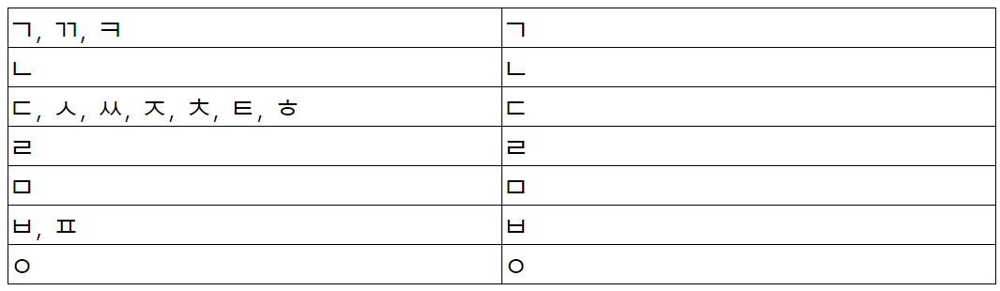

8.받침1 - Final Consonants1
a. Learn from the video!
c. Excercise
눈[nun] : snow 돈[don] : money 산[san] : mountain
곰[gom] : bear 봄[spring] :spring 김치[gimchi] : kimchi
강[gang] : river 공[gong] : ball 가방[ga bang] : backpack
달[dal] : moon 말[mal] : horse 불[bul] :
입[ip] : mouth, lip 국[gug] : soup 낮[nat] : afternoon, daytime
옷[ot] : clothes